Home
Liturgy
Roman Missal
Order of Mass
140. If they are necessary, any brief announcements to the people follow here.
141. Then the dismissal takes place. The Priest, facing the people and extending his hands, says:
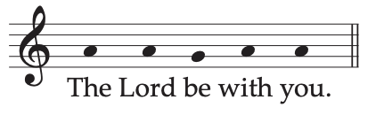
The Lord be with you.
The people reply:
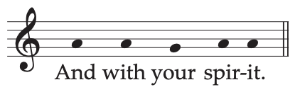
And with your spirit.
The Priest blesses the people, saying:
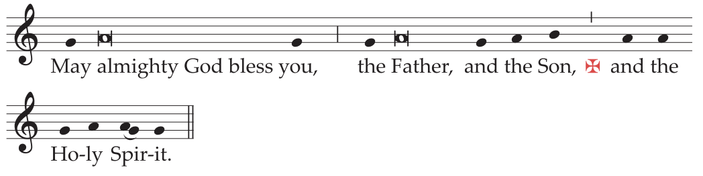
May almighty God bless you,
the Father, and the Son, ✠ and the Holy Spirit.
The people reply:

142. On certain days or occasions, this formula of blessing is preceded, in accordance with the rubrics, by another more solemn formula of blessing or by a prayer over the people (cf. pp. 674ff.).
143. In a Pontifical Mass, the celebrant receives the miter and, extending his hands, says:
The Lord be with you.
All reply:
And with your spirit.
The celebrant says:
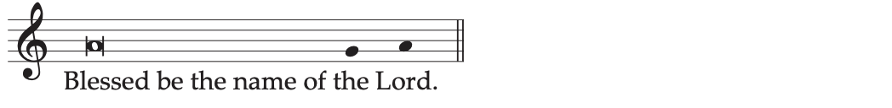
Blessed be the name of the Lord.
All reply:
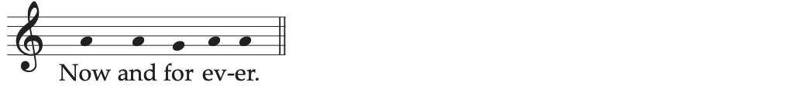
Now and for ever.
The celebrant says:
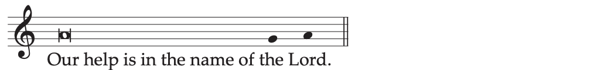
Our help is in the name of the Lord.
All reply:
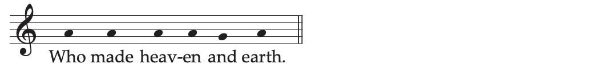
Who made heaven and earth.
Then the celebrant receives the pastoral staff, if he uses it, and says:
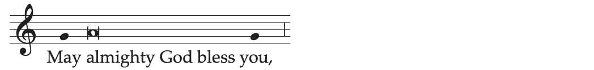
May almighty God bless you,
making the Sign of the Cross over the people three times, he adds:
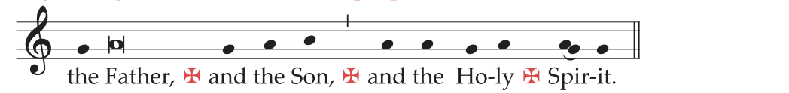
the Father, ✠ and the Son, ✠ and the Holy ✠ Spirit.
All:
144. Then the Deacon, or the Priest himself, with hands joined and facing the people, says:
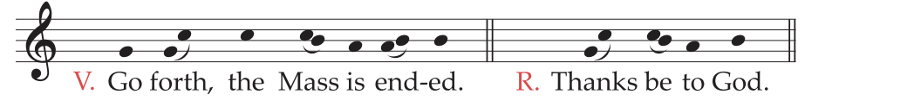
Go forth, the Mass is ended.
Or:
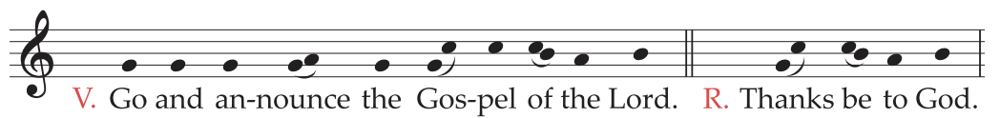
Go and announce the Gospel of the Lord.
Or:
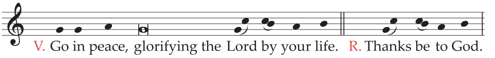
Go in peace, Glorifying the Lord by your life.
Or:
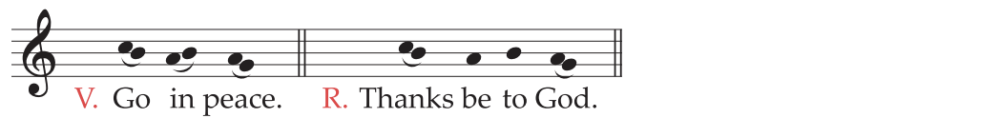
Go in peace.
The people reply:
Thanks be to God.
145. Then the Priest venerates the altar as usual with a kiss, as at the beginning. After making a profound bow with the ministers, he withdraws.
146. If any liturgical action follows immediately, the rites of dismissal are omitted.